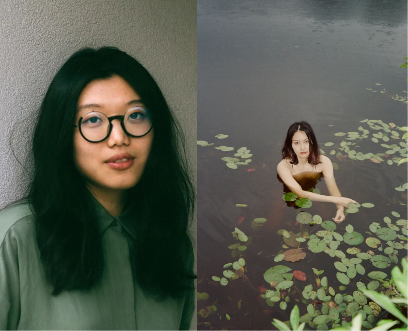

2022年9月18日至2023年2月19日，UCCA沙丘美术馆与香港Para Site艺术空间共同呈现群展“溢流地”，汇集13位（组）艺术家与团体的作品，于土地与水体交汇的场域中，探讨人类的“地球化”工程在物质、精神和生态层面带来的影响。


作为UCCA与Para Site艺术空间长达一年多合作的成果，“溢流地”先于2021年夏在香港Para Site艺术空间首展，此次在UCCA沙丘重现了香港展中的主要艺术作品，其中包括多件由UCCA与Para Site艺术空间全新委任的场域特定作品，以及新增的艺术家及多件新作品。围绕贯穿此次展览的“水文循环”与“岛屿生态”两个核心主题，参展的艺术家们撷取不同策略，从对发展主义思维背后风险的剖析、到向原初海洋神话的回归，再到聆听非人类生命的叙述，以及对未来共有土地的展望，为理解生态之网开启了全新的观看与感知之道。


关于艺术家
1989年生于山西省，现工作和生活于纽约。她的工作方式是游离的——如纺织般写作，如翻译般绘画，如梦呓般经商（参见其项目：“使用价值”），也以待客之道去教书。她进出于不同的材料和领域，她在劳动分工的边缘散步。常羽辰是纽约Poetry Project策展基金，华宇青年奖评委会大奖和芝加哥Lumiarts艺术基金的获得者。她曾在大馆（香港）、Abrons Art Center（纽约）、Para Site艺术空间（香港）、Artists Space（纽约）、Salt Projects（北京）、Assembly Room （纽约）等机构表演和展览。她参与的驻地项目包括NARS x Governors Island、MASS MoCA、艺术和设计博物馆项目等。文章见诸于黑齿杂志、燃点、Art in Print等艺术媒体。

关于艺术家
1983年生于上海，其绘画创作通过融合真实和幻想的不同层次，探索不同领域和地缘政治背景下的异质视角。她描绘的城市与个人历史密切相关：可以从包豪斯建筑原则、中国宣传艺术的意识形态、苏联共产主义美学或日本的新陈代谢主义建筑运动等主题中辨认出来。在描绘特定的城市、建筑、结构和景观时，崔洁探索了嵌入的历史视角，并巧妙地提出了距离、角度和时间的政治意义。其部分个展与双人展：“模范新村”（焦点画廊，埃塞克斯，英国，2022），“从亭到太空站”（曼彻斯特华人艺术中心，英国，2019），“凌霄阁”（柯芮斯画廊，伦敦，英国，2019），“造⼀把好椅子”（天线空间，上海，2019）等。最近的群展包括：台北双年展（2020），X美术馆三年展（北京，2020），“中国非洲”（蓬皮杜艺术中心，巴黎，法国，2020），以及“百物曲”（Para Site × 外滩美术馆，上海，2019）等。

关于艺术家
1990年生于加拿大士嘉堡，现工作和生活于香港和美国布鲁克林。其艺术实践最初更多基于玻璃制品，现已逐渐扩大涉及不同的媒介与方法。从视频到雕塑，其跨学科的实践探讨了生物学与个人身份的交集，以及性别和种族化身体的物质性。曾获得多个奖学金和驻地项目的支持，包括Pollock-Krasner基金会资助（2022），琼·米切尔绘画与雕塑家奖资助（2017）、Jerome Hill艺术家奖学金（2019-2020）。最近其作品曾在多地展出，包括Kunsthall Trondheim（2021），X美术馆（北京，2020），外滩美术馆（上海，2019），Hayward Gallery（伦敦，2019），空无画廊（香港，2018），艺术和设计博物馆（纽约，2017）。范加参与过多个艺术家驻地项目，包括Bemis Center for Contemporary Arts、Recess Art、Smack Mellon和Pioneer Works。参加的双年展包括：威尼斯双年展（2022），悉尼双年展（2020）及利物浦双年展（2021）。2023年，将在空无画廊举办第二次个展：“Sites of Wounding: Part 1”。

关于艺术家
1990年生于新加坡，艺术家、作家。创作涵盖当代艺术、电影、行为、理论等领域，以演讲、论述、影片等多元形式，聚焦影像在全球主义和统治的语境下如何产生、传播与消失。其作品和项目曾在曼谷艺术双年展（2020）、亚洲艺术双年展（2019）、光州双年展（2018）、雅加达双年展（2017）、沙迦双年展（2017）等展出。2019年，获德国奥伯豪森国际短片电影节国际电影评论奖。2018年，获选为德国学术交流总署的艺术家驻柏林创作计划的驻村艺术家。

关于艺术家
贾斯丁·舒尔德（Justin Shoulder）与本吉·拉（Bhenji Ra）于2014年在悉尼卡迪加尔原住民聚集地（Gadigal Country）成立姐妹俱乐部，意在打破“艺术、俱乐部、社区、舞蹈和政治”间的界限。其实践跨越了视频、表演和俱乐部活动，强调社区的激活。与澳大利亚、菲律宾和其他国家的亚太酷儿侨民合作，致力于创造自己的未来民俗：一种将古代知识与当代实践相结合的语言。其过去所开展的活动采用选美、综艺之夜和舞会的多样形式。姐妹俱乐部已受邀和接受委托在澳大利亚与国际多个空间或活动中表演和展览作品，包括在节日活动、独立机构、画廊、剧院、夜总会和户外环境中表演。作品曾在悉尼双年展（2020）、启蒙节（澳大利亚国家美术馆，2020）、新加坡当代艺术学院（2016），以及亚太当代艺术三年展（布里斯班，2015）上展出。2018年，参加绿木瓜艺术在菲律宾奎松市举办的Asialink驻留项目。最近，共同组织了“In Muva We Trust”和“Club Muva for Fierce Festival”（伯明翰，2022），并在澳大利亚当代艺术博物馆（悉尼，2022）为“Ultra Unreal”首演其新电影/装置作品《ANG IDOL KO/YOU ARE MY IDOL》。

关于艺术家
1979年生于美国劳德代尔堡。著有众多书籍，其中包括《门外的狼》《所有的秋天: 两部小说》《自杀者》《平壤再见》和《糟糕的写作》。此外，亦被称为面向对象写作的创造者，这是一种形而上的写作形式，试图引导对象的内心生活。杰普逊的第一个主要面向对象的写作项目《16件雕塑》由出版工作室以书的形式出版，并作为音频装置于2014年惠特尼双年展上展出，同时《16件雕塑》也成为他于伦敦威尔金森画廊举办的个展主题。杰普逊获得了安迪·沃霍尔基金会艺术作家奖金。其书法和基于文本的艺术作品曾在威尔金森画廊（伦敦）、流放地画廊（柏林）和鲁珀特画廊（维尔纽斯）展出。2023年，Itna出版社将出版杰普逊的最新小说《定居者登陆》，以及他的第一部小说《受害者》20周年版本。杰普逊在travisjeppesen.substack.com上策划了关于他作品的实时档案。

关于艺术家
1985年生于香港。其研究式创作主要关于历史编纂、意识形态与情感的时间超越性。从早年探索档案系统之于历史书写，其后发展以档案学为方法，延伸至研究式创作实践——其中包括出版、空间生产、群众参与及创建档案库。2017年开展了六个以“错置／迁移”为命题的研究式项目系列——以泛亚洲脉络中的历史与社会意涵为基础，探索人口与物质流转所导致的地缘政治论述及人类处境。联合编著《档案（库）的可能与不可能：亚洲理论与经验》（2022）；其即将举办的展览包括“沙迦双年展15:Thinking Historically in the Present” (2023)。2022年，获得由哈佛大学皮博迪考古与民族学博物馆颁发的“罗伯特·加德纳基金会摄影奖”。

关于艺术家
1985年生于香港。其研究式创作主要关于历史编纂、意识形态与情感的时间超越性。从早年探索档案系统之于历史书写，其后发展以档案学为方法，延伸至研究式创作实践——其中包括出版、空间生产、群众参与及创建档案库。2017年开展了六个以“错置／迁移”为命题的研究式项目系列——以泛亚洲脉络中的历史与社会意涵为基础，探索人口与物质流转所导致的地缘政治论述及人类处境。联合编著《档案（库）的可能与不可能：亚洲理论与经验》（2022）；其即将举办的展览包括“沙迦双年展15:Thinking Historically in the Present” (2023)。2022年，获得由哈佛大学皮博迪考古与民族学博物馆颁发的“罗伯特·加德纳基金会摄影奖”。

关于艺术家
1988年生于庐山，曾在北京中国地质大学学习地质学，之后毕业于西蒙菲沙大学视觉艺术专业和纽约大学工作室艺术硕士专业。童义欣创作物件、影像和声音来了解自己，探索人类文化与自然的动态关系，以幽默的方式对社会关于价值、体面和理性的信念进行干预。作品曾在BRIC双年展（纽约）、哥德堡双年展、OCAT双年展（深圳）、UCCA尤伦斯当代艺术中心（北京）、今日美术馆（北京）、chi K11艺术馆（上海）、当代艺术馆（多伦多）、国立台湾美术馆、上海当代艺术博物馆（上海）和赫塞尔美术馆（纽约安纳达勒·赫德森）展出。

关于艺术家
1983年生于西安，现工作和生活于洛杉矶和上海。王凝慧的创作主要围绕“地球正朝着太阳垂直落下而正好错过它”这句梵颂箴言，结合科学、技术、神话和精神视角洞察物质如何体现存在的本质。她甄选的物质通过感官、触觉和隐喻的方式传递一个有知觉的宇宙，并由此去想象如何用雕塑和电影的语言表达现实的本质。王凝慧获得多伦多大学计算机科学和国际关系学士学位、加州艺术学院艺术学士学位和纽约大学艺术硕士学位。她是巴黎索邦大学和柏林Villa Aurora的研究员，荣获多项加拿大艺术委员会的奖金资助，目前在上海纽约大学任客座助理教授，教授艺术。共同组织了莫哈韦沙漠户外展览平台——“The Magic Hour”。王凝慧曾于胶囊上海（2021）、OCAT西安（2021）、Human Resources（洛杉矶）和18街艺术中心（圣莫尼卡）举办个展。她曾参加过洛杉矶当代展览馆、哈默博物馆（洛杉矶）、K11艺术基金会（香港）和Para Site艺术空间（香港）等机构的群展、放映和表演。即将进行的项目包括于Kling & Bang（雷克雅维克，2023）和文森特·普莱斯艺术博物馆举办个展（洛杉矶，2024）。

关于艺术家 (康康与马汀滢)
未来主人是成立于2016年的艺术家小组，认为世界是有情感与知觉的，仅能依由认识论中的探索来理解。未来主人曾受邀于纽约美国华人博物馆，纽约国际艺术工作室及策展项目（International Studio and Curatorial Program）、北京UCCA尤伦斯当代艺术中心、上海明当代美术馆，纽约贾德逊教堂（Movement Research at Judson Church）、北京激发研究所、日本横滨国际表演艺术节等机构进行展演。未来主人曾入围 2018 年华宇青年艺术奖，并于2019至2020年在纽约总督岛的Shandaken Projects进行为期一年的驻留。其写作发表于纽约出版机构 Wendy's Subway、《T Magazine风尚志中文版》、《艺术界》以及中国美院跨媒体艺术学院“网民 21”网络年会会刊，出版物《饕饕餮餮》见于纽约Printed Matter书店。

关于艺术家 (康康与马汀滢)
1993年出生于苏州，现居住在伦敦。其视频、装置和软件作品研究投机性信仰与物质世界之间的关系。最近的项目探讨了自然灾害、跨国诈骗和宇宙经济。2022年，他在伦敦萨默塞特宫首演《死猫跳》（与“废纸歌剧”组织一起出演），这是一部关于金融和灾难的清唱歌剧。作为研究人员，张哲熙曾在洛杉矶的Berggruen研究所和拉马拉的Sakiya--艺术科学农业研究所担任研究员。他曾在金史密斯学院的MFA和帕森设计学院的传播设计课程中任教。也是设计工作室Foreign Objects的共同创始人，该工作室曾在NEW INC孵化，并获得Mozilla创意媒体奖。其文章见诸于《Frieze》《ArtReview》《ArtPapers》《VERGE:全球亚洲研究》，并参与撰写了《Steve Bishop：Deliquescing 》（Sternberg，2018）、 《Against Reduction》 （MIT Press，2021）。作为作家和编辑的第一本书，是合作的散文和小说集《灾难时间！》，将于2023年由Strange Attractor出版社出版。近期参与了多个展览和放映计划，其中包括个展“Cycle 25”（Arts Catalyst & Bloc Projects画廊，谢菲尔德，2022）；参与的群展包括：“预演未来”（金马宾馆当代美术馆，台湾，2022）；“希望的原理”（中间美术馆，北京，2022），“溢流地”（Para Site艺术空间，香港，2021），“神秘参与”（明当代美术馆，上海，2020）和第16届国际威尼斯建筑双年展：“沼泽学校”（2018）。

关于艺术家
郑马乐是由艺术家吴瀚生（Royce Ng）和人类学家黛西·比森尼克斯（Daisy Bisenieks）于2015年成立的艺术团体。他们共同检视全球贸易、连接自然与技术以及超越人类的地理生境的关系网络，探索它们彼此相互影响的流动，及其创生出的环境构造。以数字媒体、表演和装置等艺术形式，创造出思辨性的场景和沉浸式的感官接触，探求艺术与人类学所具有的极限和潜力。他们与不同社区合作，在澳大利亚、亚洲、非洲、欧洲和美国的许多艺术空间、机构和驻地机构举办了相关展览和表演活动。其最近的展览包括：上海双年展（2021），“Phantom Plane：未来之年的赛博朋克”（香港，大馆，2019）和苏州文献展（2016）。